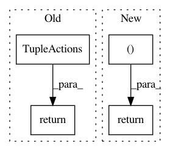

1775e89f262111791fabfd40f80a24f74738fe54,rllib/examples/autoregressive_action_dist.py,BinaryAutoregressiveOutput,sample,#BinaryAutoregressiveOutput#,83
Before Change
self._action_logp = a1_dist.logp(a1) + a2_dist.logp(a2)
// return the action tuple
return TupleActions([a1, a2])
def logp(self, actions):
a1, a2 = actions[:, 0], actions[:, 1]
a1_vec = tf.expand_dims(tf.cast(a1, tf.float32), 1)
After Change
self._action_logp = a1_dist.logp(a1) + a2_dist.logp(a2)
// return the action tuple
return (a1, a2)
def logp(self, actions):
a1, a2 = actions[:, 0], actions[:, 1]
a1_vec = tf.expand_dims(tf.cast(a1, tf.float32), 1)
In pattern: SUPERPATTERN
Frequency: 3
Non-data size: 4
Instances
Project Name: ray-project/ray
Commit Name: 1775e89f262111791fabfd40f80a24f74738fe54
Time: 2020-04-28
Author: sven@anyscale.io
File Name: rllib/examples/autoregressive_action_dist.py
Class Name: BinaryAutoregressiveOutput
Method Name: sample
Project Name: ray-project/ray
Commit Name: 1775e89f262111791fabfd40f80a24f74738fe54
Time: 2020-04-28
Author: sven@anyscale.io
File Name: rllib/examples/autoregressive_action_dist.py
Class Name: BinaryAutoregressiveOutput
Method Name: deterministic_sample
Project Name: ray-project/ray
Commit Name: 1775e89f262111791fabfd40f80a24f74738fe54
Time: 2020-04-28
Author: sven@anyscale.io
File Name: rllib/utils/exploration/stochastic_sampling.py
Class Name: StochasticSampling
Method Name: _get_tf_exploration_action_op